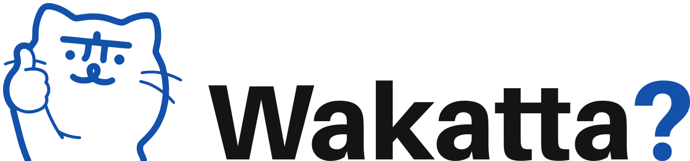
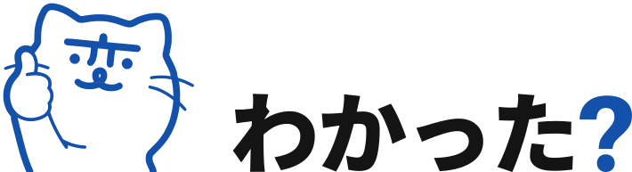
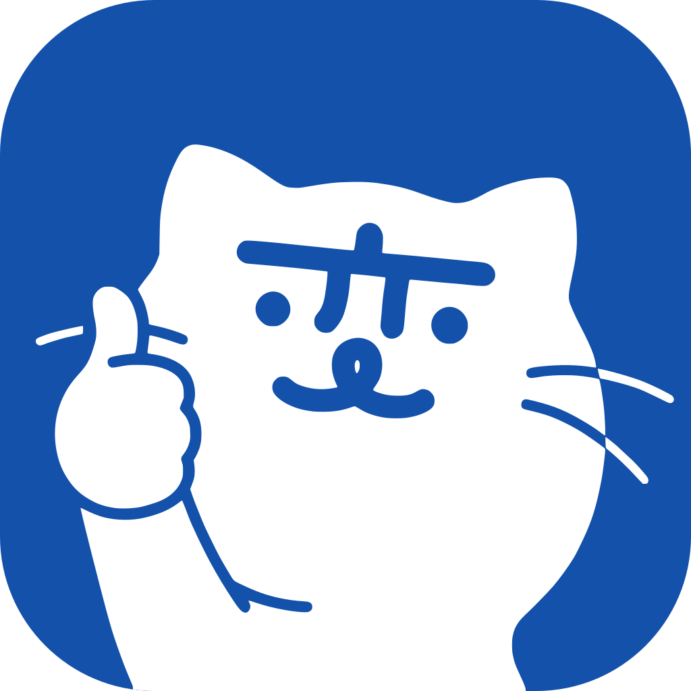
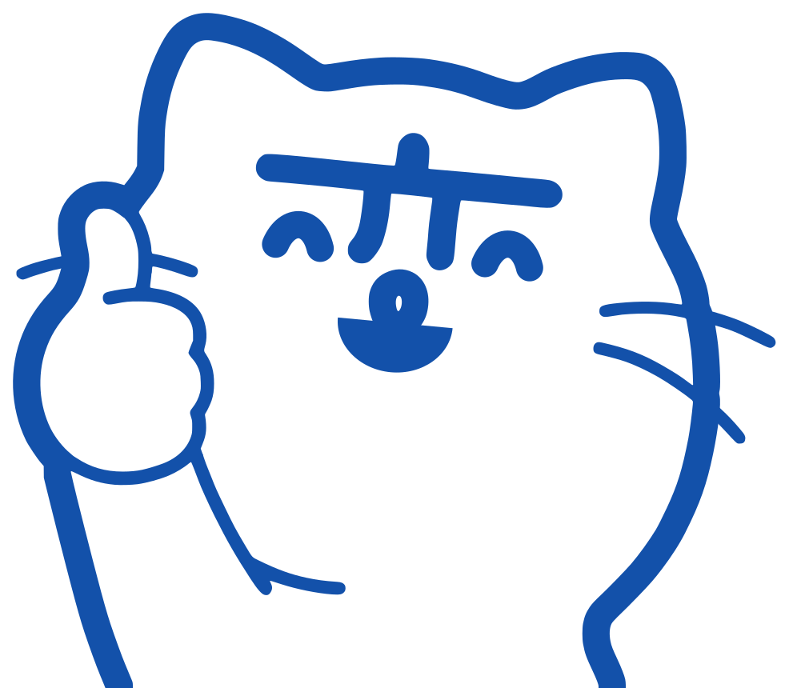

Brand sheet
Nekko, the white cat with the thumbs-up, answers the question in the name. Poster Modernist (track P) for big surfaces, Playful rounded (track R) for icons and small art.
Colour
#1351AA#246DD4#E3E2DE#141414#FFFFFF#C7C7C7#1E6B3A#B3261E#8A5300State colours carry meaning only (Lottie, empty states). Tokens: tokens.css, tokens.json.
Logo
logo-full Nekko and wordmark. Default.logo-lockup-stacked for square spaces.
logo-lockup-ja for Japanese-language surfaces.logo-wordmark, logo-wordmark-ja. The cobalt "?" is the question Nekko answers.logo-white on jet or cobalt.logo-black one-colour use, on white or cream.
Clear space
Keep free space of x on every side, where x is half the cap height of the wordmark (the height of the "W"). Nothing enters the dashed zone: no edge, no other logo, no text.
Each arrow is x. The Nekko bust is cut flat: it sits flush on the wordmark baseline.
Minimum size
| Asset | Minimum width | Note |
|---|---|---|
| logo-full, logo-white, logo-black | 120 px (30 mm) | Below that use the wordmark or the mark |
| logo-lockup-stacked, logo-lockup-ja | 120 px | |
| logo-wordmark, logo-wordmark-ja | 80 px | Japanese wordmark: 96 px |
| logo-mark (Nekko) | 40 px | Below 40 px use the favicon |
| logo-favicon | 16 px | Checked at 16, 32, 48 |
Do and do not
Also never: rotate, add shadows or outlines, redraw Nekko, set the name in another typeface, or use the Icon blue in the lockups.
Nekko expressions




Style tracks
P, Poster Modernist: cream, jet, cobalt and white only, 0 px corners, flat blocks and hairline rules; for hero, footer, banners, social.
R, Playful rounded: rounded corners and round caps, one thick line weight like Nekko's, flat fills; for app icons, spot art, empty states and Lottie.
Pattern
pattern-nekko.svg: 960 x 960 tile, transparent, seamless. Use on cream.